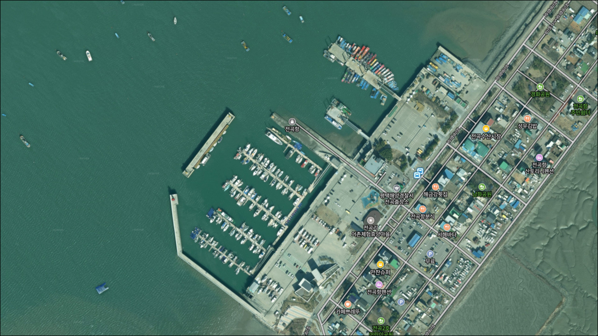
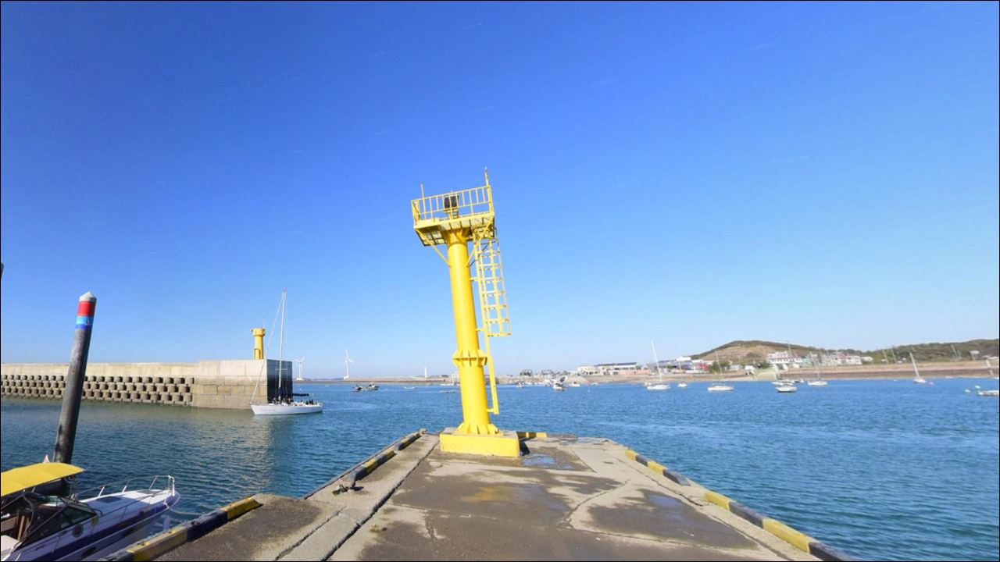
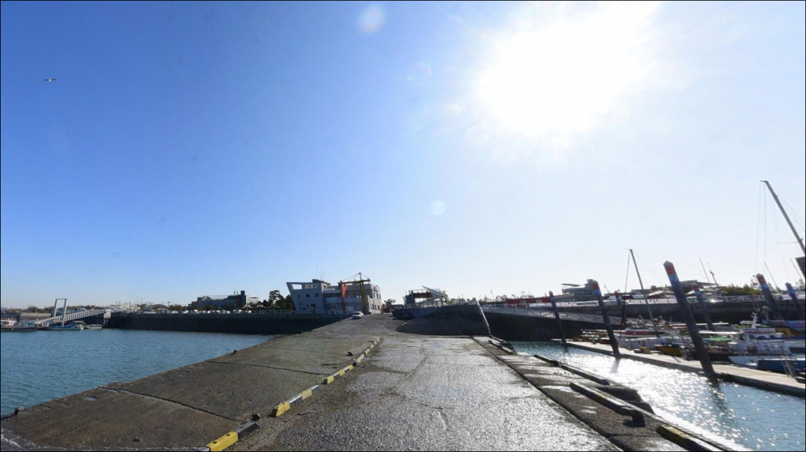
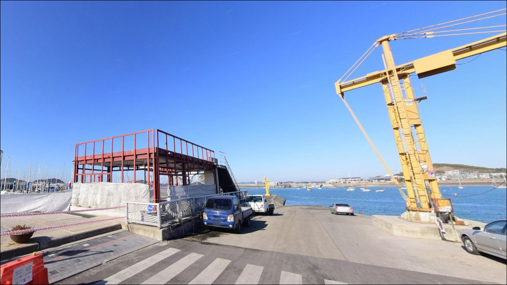
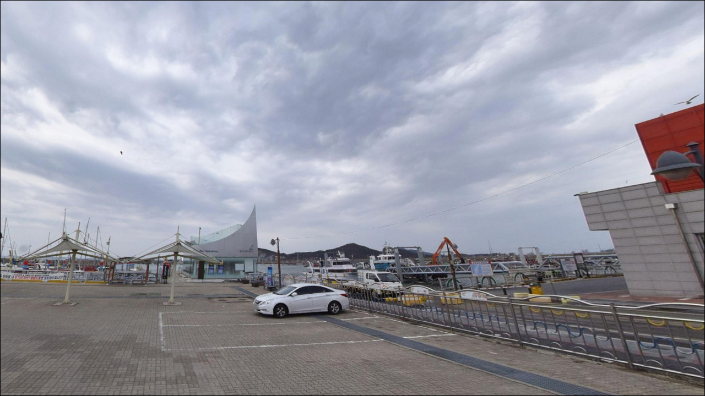
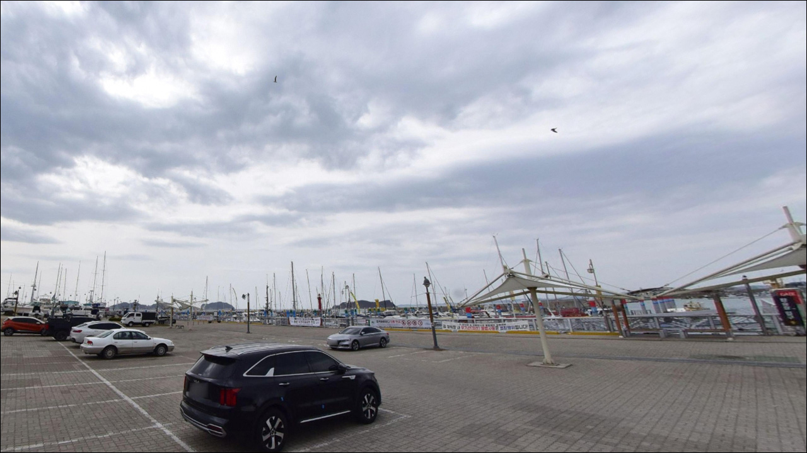
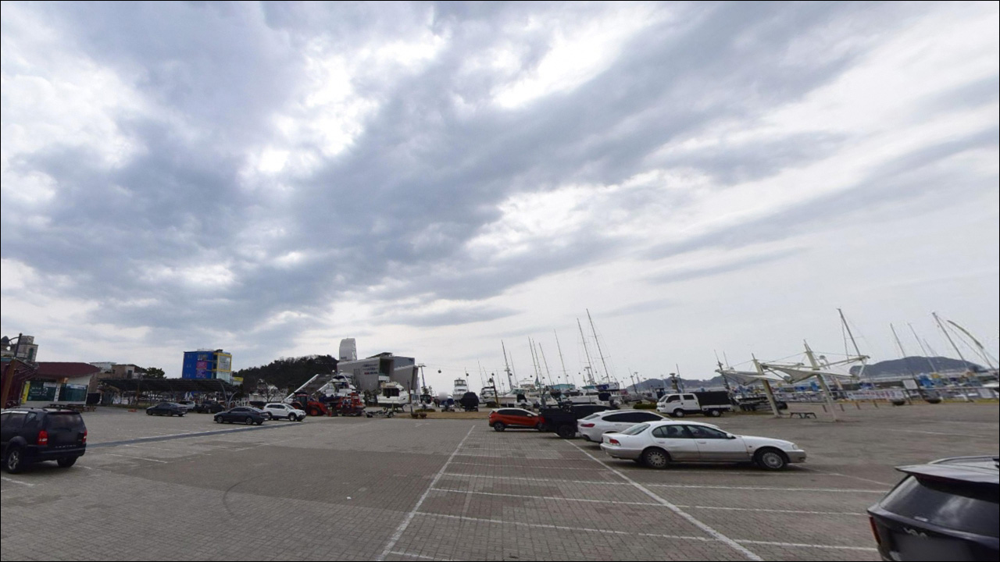
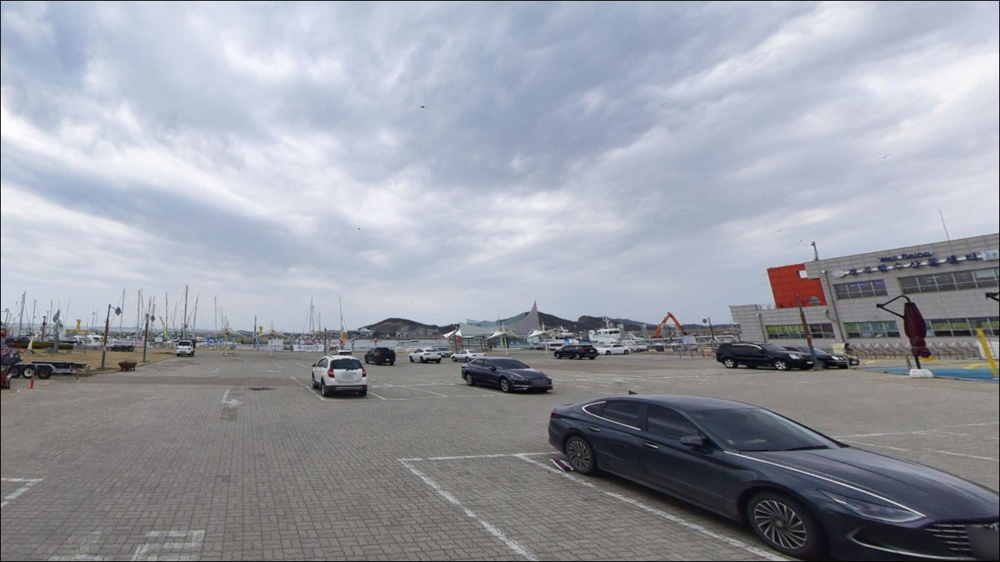
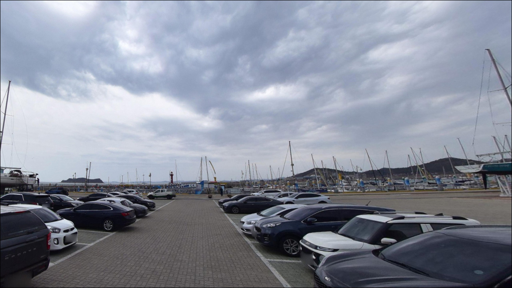

전곡항, 경기 화성시 고요함이 매력인 차박, 낚시 감성 장소
이 페이지에는 광고(제휴 링크 포함)가 있으며, 광고 링크를 통해 구매하면 운영자가 판매 수익 또는 수수료를 받을 수 있습니다. 포인트 사진: 카카오맵 스카이뷰·로드뷰. 이 페이지의 지도·사진 이미지는 카카오맵의 실제 서비스 이미지와 다를 수 있습니다.


포인트 안내
전곡항
경기 화성시 서신면 전곡리 1080
전곡항을 일반 방파제 낚시 포인트로 접근하면
낚시 가능 구간이 생각보다 좁아
당황할 수 있습니다.
내항은 마리나 계류 전용 구역이라
낚시 접근이 제한될 가능성이 있고,
항 반대편 갯벌 전체는
어촌계 관리 구역으로 진입이 막혀 있습니다.
연안에서 채비를 풀 수 있는 자리는
방파제와 석축 주변으로 한정되며,
이 구조를 사전에 파악하지 않으면
현장에서 자리 선정에 불필요한 시간을
쓰는 결과로 이어집니다.
이 글은 전곡항의 낚시 가능 구간과
연안·선상 낚시 활용 조건,
차박 여건에 집중합니다.
조황 단정이나 특정 어종 보장은
이 글의 범위에 포함되지 않습니다.

1. 진입 동선과 포인트 접근성
전곡항은 서해안고속도로 비봉 IC에서
서신면 방향으로 진입하는 구조입니다.
지방어항이자 마리나 레저 거점으로 개발된 항구라
항구까지 이어지는 전곡항로는
포장 상태가 양호하고 도로 폭도 넉넉한 편입니다.
대형 SUV나 루프탑 차량도 진입 자체에
큰 어려움은 없을 것으로 보입니다.
주차는 마리나 인근 공용 주차장과
수산물 직판장 앞 공간을 이용하는 방식이
일반적입니다.
항 전체 규모가 큰 편이라 주차 공간 자체는
확보되는 편이지만,
주말·성수기에는 관광객 차량이 집중되어
혼잡해지는 경향이 있습니다.
낚시 출조 목적이라면 평일이 유리합니다.
낚시 자리를 잡기 위해 주차 후
방파제나 석축 방향으로 이동하는 동선은
미리 파악해 두는 것이 시간을 아끼는 방법입니다.
항 내부에서 마리나 전용 구역과
어항 구역의 경계는
현장 안내판을 기준으로 확인하는 편이 안전합니다.

2. 차박 환경과 야간 체류 여건
전곡항은 마리나 클럽하우스, 어촌체험마을,
여행스테이션 등이 집중된 관광어항입니다.
야간에도 가로등과 상가 조명이 켜져 있어
완전한 암흑 환경은 기대하기 어렵습니다.
낚시 후 조용히 머무는 용도로는
활용 가능한 수준이지만,
적막한 노지 차박 분위기와는
거리가 있는 편입니다.
탄도방조제로 감싸인 구조 덕분에
항 내부는 직접 파도 영향을 받지 않는 편입니다.
다만 서해안 특성상 바람은 노출 방향에 따라
강해질 수 있어,
환절기나 바람 예보가 있는 날은
기상 확인이 출발 전 필수입니다.
주말에는 선상낚시 출조 인원과
관광객 차량이 겹쳐
주차 공간이 빠르게 찰 수 있습니다.
차박 체류 목적이라면
비수기 평일을 기준으로 잡는 편이
조용한 환경을 확보하는 데 현실적입니다.


3. 주변 편의시설 및 인프라 현황
전곡항 내에는 어촌계 직영 수산물 직판장이 있습니다.
마리나 클럽하우스 건물 안에는
카페(2층)와 레스토랑(3층)이 입점해 있어
기본적인 식음 수요는 해결 가능합니다.
다만 운영 시간과 요일은
방문 전 직접 확인하는 편이 안전합니다.
항 자체가 관광 기능을 갖춘 어항이라
상가와 식당이 비교적 밀집한 구조입니다.
동쪽 약 1.5km 거리에 탄도항이 있어
부족한 물품이 생길 경우
탄도항 방면으로 이동해 보완하는 동선도
큰 부담 없는 거리입니다.
연료나 비상 물품, 낚시 소품은
출발 전에 기본으로 갖추고 오는 편이 무난합니다.
화성시 송산면 사강시장이 비교적 가까운 거리에 있어
수산물이나 식재료를 구입할 경우
이동 경로에 넣어볼 수 있는 옵션입니다.

4. 방파제 진입 전 반드시 챙겨야 할 준비사항
전곡항 방문 전 가장 먼저 확인할 것은
물때입니다.
서해 특성상 조수간만의 차이가 크고,
물때에 따라 조류 흐름이 달라지면
채비 컨트롤 난이도도 함께 바뀝니다.
바다타임에서 화성 기준 물때를 확인하고
들물 전후 타이밍을 기준으로
출발 시각을 맞추는 것이 기본입니다.
선상낚시 출조를 계획하고 있다면
출조 선박 예약과 승선 인원 확인을
미리 진행해야 합니다.
선상 출조 시에는 구명조끼를
승선 전부터 착용하는 것이
해양 안전 수칙의 기본이며,
기상 예보는 출발 당일 아침에
한 번 더 확인하는 것이 출조 실패를 줄이는 조건입니다.
방파제·석축에서 연안 낚시를 할 경우
항 반대편 갯벌 구역에는 진입하지 않는 것이
기본 매너입니다.
낙지·어패류 양식장으로 관리되는 구역이라
공식 행사 외에 개인이 진입하면
관계 법령에 저촉될 수 있습니다.
낚시 채비는 방파제와 석축 주변으로만
운용하는 것이 안전합니다.

5. 전곡항 연안 낚시가 가능한 구간과 수심 조건
전곡항에서 주목할 지형 조건은 수심 안정성입니다.
서해안 방파제의 일반적인 약점인
간조 시 수심 소멸 문제가
탄도방조제 구조 덕분에 이 항에서는
구조적으로 완화되어 있습니다.
서해안에서 간조 후에도 수심 3m가 유지되는 항구는 드문 편이며,
이 점이 연안 낚시의 기본 조건을 만들어줍니다.
바닥 지형은 펄과 돌바닥이 섞여 있는 구조로 보입니다.
방파제 안쪽 내항 방향은 비교적 잔잔한 편이고,
방파제 끝단 방향으로 갈수록
외해 조류 영향을 더 받는 구조입니다.
밑걸림 발생 빈도는 포인트마다 차이가 있어
여분 채비를 넉넉히 준비하는 편이 좋습니다.
항 반대편 갯벌 구역 전체는
어촌계 양식 관리 구역이어서
낚시 진입 자체가 막혀 있습니다.
전곡항 방파제·석축 연안 낚시는
마리나 계류 구역을 제외한
어항 구역 자리에서만 채비 운영이 가능합니다.
출조 전 최신 조황은
검색을 통해 반드시 확인하시기 바랍니다.


6. 전곡항에 어울리는 낚시 스타일
연안 낚시 기준으로 이 항에서
가장 잘 맞는 방식은 원투낚시입니다.
매년 전곡 어촌계 주관으로
망둥어 낚시 대회가 열리는 항이라는 점에서,
방파제·석축 구간에서
원투 자리는 실재하는 낚시 여건입니다.
청갯지렁이 생미끼를 활용한
원투 방식이 이 지형에 기본으로 어울리며,
가을철 망둥어 시즌이 이 항의 연안 낚시 활황기입니다.
루어낚시도 시도해볼 수 있는 방식입니다.
선상 출조선들이 광어 다운샷, 농어 루어를
주력 프로그램으로 운영하는 항구라는 점에서,
방파제 끝단 수중 구조물 주변에서
지그헤드 채비를 이용한 우럭·노래미 공략은
가능성이 있는 편입니다.
방파제 끝단 방향으로 갈수록
루어 반응을 기대해 볼 수 있는 자리가 형성됩니다.
수심이 일정하게 유지되는 내항 구간에서는
찌낚시도 적용해 볼 수 있습니다.
부잔교 주변처럼 수면이 잔잔한 구간에서
숭어·전어를 대상으로
가벼운 채비를 운용하는 방식입니다.
야간에는 붕장어 원투가
서해 방파제 공통 야간 낚시 패턴과
어울리는 방식입니다.

7. 대안 포인트와 플랜 B 동선
전곡항 연안 여건이 기대에 못 미칠 경우,
가장 가까운 대안은
동쪽 약 1.5km 거리의 탄도항입니다.
화성시와 안산시 대부도의 경계에 위치한 항으로,
항 안쪽은 간조에도 수심이 유지되는 구조이며
방파제 낚시 접근이 가능하고
편의시설도 갖춰져 있다는 언급이 있습니다.
이동 거리가 짧아 전곡항 방문과
묶어서 탐색하기 좋은 위치입니다.
서쪽으로 약 9km 거리에는 궁평항이 있습니다.
방파제 두 개에서 낚시 접근이 가능하고
외항과 내항 모두 수심이 적절한 수준으로
알려진 곳입니다.
망둥어, 숭어, 전어가 잘 낚이는 포인트로
언급되며,
전곡항 출조 후 여건이 부족할 때
이동하기 좋은 서해 중부권 방파제입니다.
남쪽 제부도 일대 방파제와 연안 구간은
루어와 원투를 시도해볼 수 있는
추가 대안으로 거론됩니다.
제부도는 조석에 따라 진입 조건이 달라지는
특성이 있어, 물때에 맞춰
이동 동선을 미리 설계하는 것이
이 권역 플랜 B의 기본 방식입니다.

선상과 연안, 두 선택지를
모두 열어두는 항구입니다
선상낚시 출조를 주목적으로 하는 낚시인이라면
전곡항은 수도권에서 접근성이 좋은
서해 거점항으로 충분히 활용 가능합니다.
우럭·광어·쭈꾸미 시즌별 어종을 노리는
출조선이 다수 운영되며,
탄도방조제로 보호되는 항구 구조 덕분에
기상 조건이 맞으면
출항 안정성도 양호한 편입니다.
연안 직접 낚시를 기대하고 간다면
구역 구분을 먼저 파악하는 것이 순서입니다.
마리나 계류 구역과 갯벌 어촌계 관리 구역을
제외하면 낚시 가능 구간이 한정되는 만큼,
방파제·석축 주변에서의
원투·루어·찌낚시를 메인으로
계획하는 것이 현실적인 접근입니다.
가을 망둥어 시즌은
연안 낚시 기준으로도 기대해볼 만한 시기입니다.
조용한 노지 차박보다는
낚시 후 단기 체류 수준이 이 항에 더 맞으며,
물때를 맞추고 자리를 제대로 골라
하룻밤 머무는 출조라면
서해 중부권의 실속 있는 포인트로
기억에 남는 곳이 될 수 있습니다.